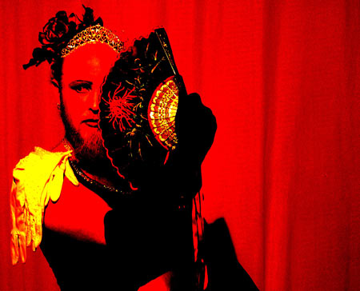

| En Stille Aften Med dunst | 12. Februar 2005 |
 |
|
| Her Royal Highness, Princess Hans, last surviving Royal of
the Austro-Hungarian Empire, maker of fine Russian Fudge and Purveyor of
Song since 1853.
Hendes royale højhed, Prinsess Hans, sidste overlevende fra det Østrig-Ungarske Imperium, fremstiller af russisk konfekt og forsvarer af den centraleuropæiske sangskat siden 1853. |
|